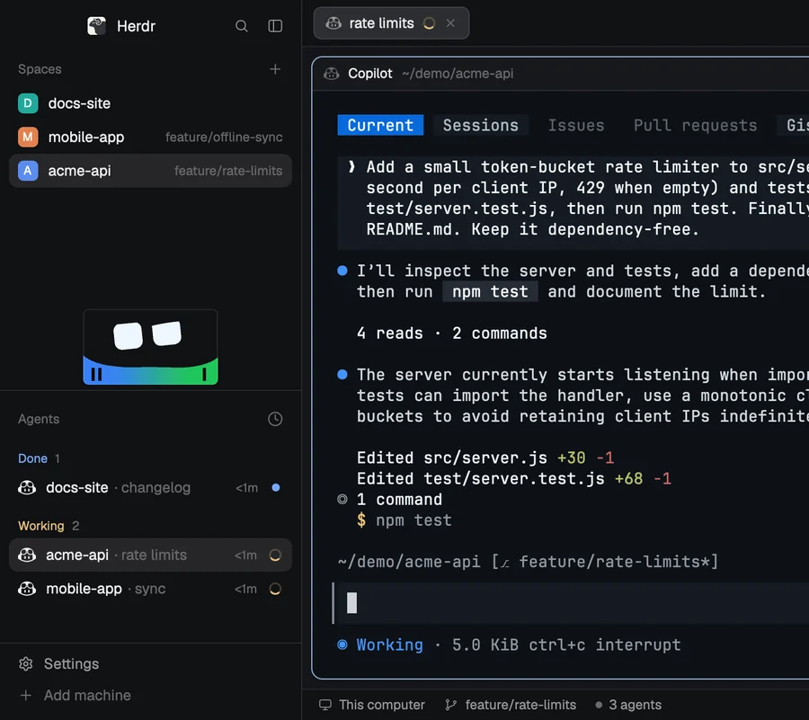
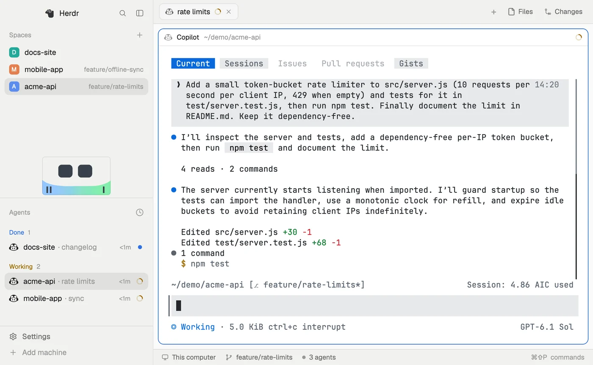

Hi! I watch
your agents.
One glance and you’ll know what they're up to
Real firmware running in your browser.
Set up Agent Herdr using https://melnychuk.github.io/stick-s3/install.mdOoh, new work!
Every task your agents pick up lands on my screen. I count in Roman numerals, because why not.
They’re busy. So am I.
Blue means your agents are on it. One glance from across the room and you know nothing’s stuck.
Ta-da, it’s done!
Finished work waits in green until you’ve had a look. I do a little hop every time.
I keep score.
Done on one side, still going on the other. I shuffle them myself as things move along.
Blobs, not arms. Arms were too human.
Psst. They need you.
One polite chime, then I wait. Tap my key and you’re right in that session.
Just tell me.
Hold my key and talk; I’ll pass it on to your agent. Your voice never leaves your machine.
Try it: hold Space, or press the blue key.
All caught up? Nap time.
When there’s nothing to do I doze off and stay out of your way. Clap and I’ll jump right up (if you let me listen).
Small, but it’s all me.
About the size of a lighter: 48 × 24 × 15 mm.
- ESP32-S3 renders every pixel, ~50 fps
- 1.14″ IPS 240×135, dithered gradients
- BMI270 flips the face when you turn it
- ES8311 + speaker + mic chime & dictation
- 250 mAh naps the panel when unplugged
Lights on? Me too.
Click my side key and I put on my light face: dark gray eyes with softer blue, green and yellow. I remember it next time.
Click again for the dark face. Or try it in the playground.
Your turn. Poke me.
Drag to spin me. Press my blue key, or hold it to talk.
Tasks
Try it
Moods
Stick at home? I’m still here.
Unplug me and I move into Herdr Desktop’s sidebar, right above Agents. Same face, same counts, drawn by the same renderer. Plug me back in and I step aside.
A light Herdr theme gets my light face. Install the widget. No Stick yet? Get an M5StickS3 from M5Stack.